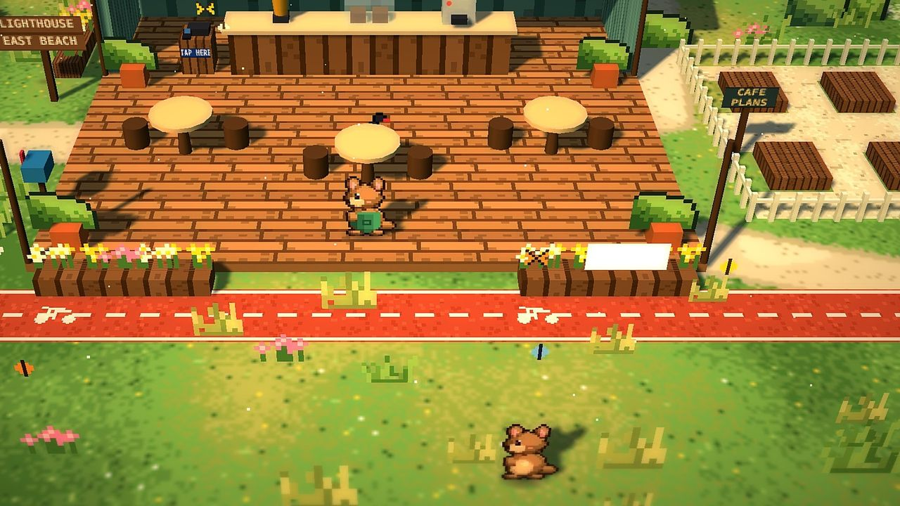

StoryCH 1
เรื่องของ Kip
จากบ้านหลังเล็ก สู่คาเฟ่ริมทะเล

Kip ควอกก้าหนุ่มออกจากบ้าน นั่งเรือข้ามฟากมาที่เกาะ Wadjemup (Rottnest) พร้อมความฝันว่าจะเปิดคาเฟ่ของตัวเอง
ทุกเช้าเรือเฟอร์รี่จาก Fremantle พานักท่องเที่ยวมาที่ร้าน หลังร้านปิดตอนบ่าย Kip ออกสำรวจเกาะ เจอเพื่อนใหม่ ทำเควสต์ และเก็บเงินตาม wishlist จนวันหนึ่งพ่อกับแม่ย้ายมาอยู่บนเกาะด้วยกัน